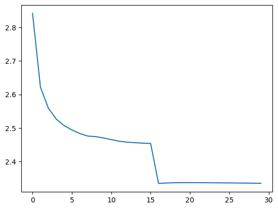

import matplotlib.pyplot as plt
import torch
from torch import nn
from torch.nn import functional as F
# import mlflowwith open("../../names.txt", "r") as f:
names = f.read().splitlines()names[:5]['emma', 'olivia', 'ava', 'isabella', 'sophia']
class MLP(nn.Module):
"""
Based on Bengio et al. 2003. See local copy at `./bengio03a.pdf`
https://www.jmlr.org/papers/volume3/bengio03a/bengio03a.pdf
Letter level tokens are looked up in an embedding table.
Embedding vectors are then fed into a n-dimensional hidden layer.
Finally a softmax is applied to the output layer, producing a probability
distribution over all possible next tokens in the sequence
A blocksize variable is used to determine the number of context characters
to use. This allows for a fixed sized hidden layer.
"""
def __init__(self, blocksize, embedding_dimension, vocab_size, hidden_layer_size):
super().__init__()
self.blocksize = blocksize
self.embedding_dimension = embedding_dimension
self.hidden_layer_input_size = self.blocksize * self.embedding_dimension
# token embeddings
self.C = nn.Parameter(torch.randn(vocab_size, embedding_dimension))
# hidden layer
self.W = nn.Parameter(torch.randn(self.hidden_layer_input_size, hidden_layer_size))
self.d = nn.Parameter(torch.zeros(hidden_layer_size))
# output layer
self.U = nn.Parameter(torch.randn(hidden_layer_size, vocab_size))
self.b = nn.Parameter(torch.zeros(vocab_size))
def forward(self, x, targets=None):
embeddings = self.C[x]
# use view to arrange all of the embeddings into a column vector for
# each example. With batches this will be a [bs, concat_embeddings]
# sized matrix
h = (embeddings.view(-1, self.hidden_layer_input_size) @ self.W + self.d).tanh()
logits = h @ self.U + self.b
preds = F.softmax(logits, dim=1)
loss = None
if targets is not None:
loss = F.cross_entropy(logits, targets)
return preds, lossdef get_batches(*tensors, batch_size):
assert len(set([t.shape[0] for t in tensors])) == 1, "All tensors must have the same number of rows"
for i in range(0, tensors[0].shape[0] // batch_size):
batch_start = i * batch_size
batch_end = batch_start + batch_size
yield tuple([t[batch_start : batch_end] for t in tensors])def split_data(array):
frac = array.shape[0] * 0.1 // 1
train = array[:int(frac * 8)]
val = array[int(frac * 8): int(frac * 9)]
test = array[int(frac * 9):]
assert train.shape[0] + test.shape[0] + val.shape[0] == array.shape[0]
return train, val, testletters = sorted(list(set("".join(names))))
letters.insert(0, ".")
ltoi = {l:i for i, l in enumerate(letters)}
itol = {i:l for l, i in ltoi.items()}# datasets
blocksize = 3
xs, ys = [], []
for n in names:
n_padded = "." * blocksize + n + "."
for i in range(len(n) + 1):
xs.append([ltoi[z] for z in n_padded[i : i + blocksize]])
ys.append(ltoi[n_padded[i + blocksize]])
xs = torch.tensor(xs)
ys = torch.tensor(ys)
xtrain, xval, xtest = split_data(xs)
ytrain, yval, ytest = split_data(ys)
m = MLP(
blocksize=blocksize,
embedding_dimension=20,
vocab_size=27,
hidden_layer_size=100
)losses = []
epochs = 30
lr = 1e-1
find_lr = False
lrs = torch.logspace(-5, 0, epochs)
bs = 32
for i in range(epochs):
for xbatch, ybatch in get_batches(xtrain, ytrain, batch_size=bs):
preds, loss = m(xbatch, ybatch)
m.zero_grad()
loss.backward()
if find_lr:
epoch_lr = lrs[i]
else:
epoch_lr = lr if i <= 0.5 * epochs else lr * 0.2
for p in m.parameters():
p.data += -epoch_lr * p.grad.data
_, val_loss = m(xval, yval)
print(val_loss.item(), epoch_lr)
losses.append(val_loss.item())2.8416688442230225 0.1
2.622138261795044 0.1
2.5594422817230225 0.1
2.5266711711883545 0.1
2.5069942474365234 0.1
2.494065761566162 0.1
2.483363151550293 0.1
2.475870370864868 0.1
2.474015474319458 0.1
2.470193862915039 0.1
2.4651033878326416 0.1
2.4604196548461914 0.1
2.457545280456543 0.1
2.455993890762329 0.1
2.4545724391937256 0.1
2.45381236076355 0.1
2.3344271183013916 0.020000000000000004
2.335831880569458 0.020000000000000004
2.336484909057617 0.020000000000000004
2.336735963821411 0.020000000000000004
2.336778402328491 0.020000000000000004
2.3367011547088623 0.020000000000000004
2.3365516662597656 0.020000000000000004
2.33636212348938 0.020000000000000004
2.3361499309539795 0.020000000000000004
2.3359227180480957 0.020000000000000004
2.3356845378875732 0.020000000000000004
2.3354358673095703 0.020000000000000004
2.335176944732666 0.020000000000000004
2.3349075317382812 0.020000000000000004plt.plot(range(epochs), losses)
blocksize=3, embedding_dimension=10, vocab_size=27, hidden_layer_size=50 val_loss=2.368145227432251
blocksize=3, embedding_dimension=20, vocab_size=27, hidden_layer_size=50 val_loss=2.366750478744507